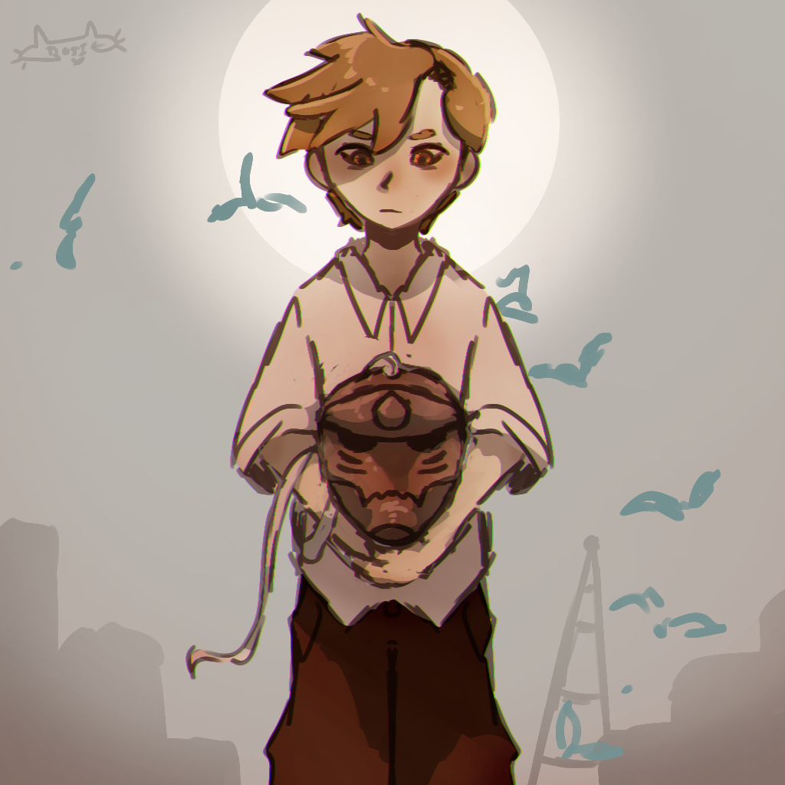
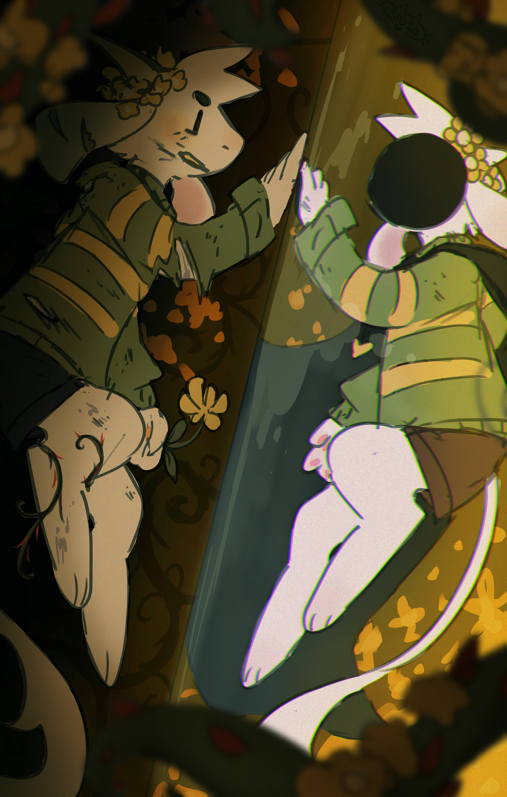
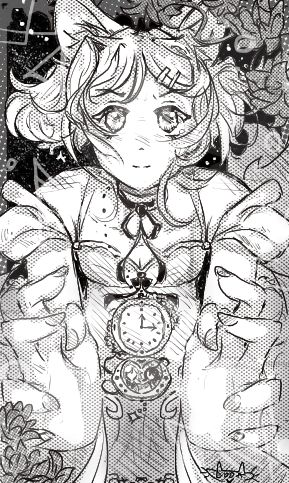

Artworks!
Here are some of my recent arts :D (as of 2026, anyways) Most of these art fanart... oh well :P a girl's gotta have passions

This is fanart of my favorite Fullmetal Alchemist character, Alphonse Elric! Or, rather, his human form. I drew him in Liore, as it's a war-torn town in the 2003 edition of the show, to represent sort of how he and his brother Edward were dragged into the military far too early (this is also why I drew him as his child self, before his soul possessed a suit of armor). He also has birds flying around him as he's commonly seen with them in the openings of the anime, and can represent his desire for freedom from what he's become. :D

This is fanart of my favorite character from Undertale, Asriel! Don't read past this if you don't want MAJOR spoilers. Anyways, this is his current self (I chose to draw him as a personification of his Flowey form) contrasted with his past self. The title of this piece is The Ship of Theseus. If you replace every part of a person, are they still the same? Technically all Flowey is is just a flower that happened to absorb the dead monster prince's dust, and then happened to be used in the DT experiments and just so happened to come to life. Technically, he is an entirely different being than the Underground's late prince. And yet he has his memories and knows what he's lost, he remembers his late sibling and remembers being able to love back when he had a soul, and back before he gained the power of Determination and resets. Idk lol just some random ahh yapping XD. i think too much about Undertale can you tell

This is some art I made of Haruko, a character from my video game. I was inspired by the style of the Jibaku Shounen Hanako Kun manga.

The thumbnail for MHSHSS! I drew it and am very proud of it :D Poor Sakura... She is not having the greatest of times, if you cannot tell lol. Rip to her :(
Socials!
Tumblr:
@starrrosieArtfight:
@rosietea